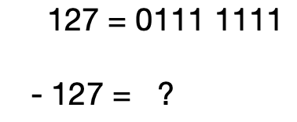
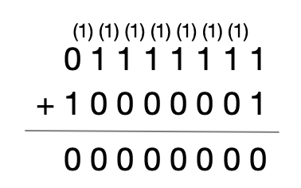
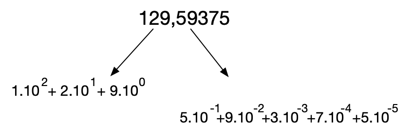
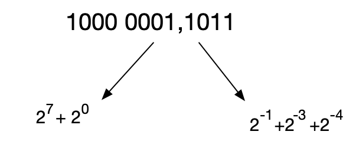
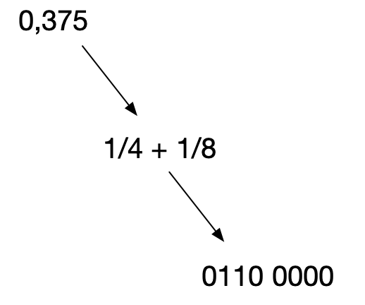
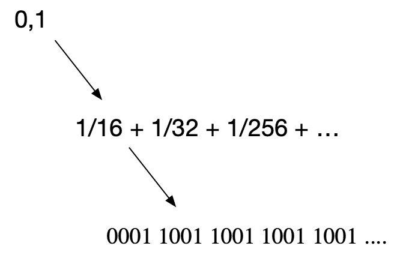
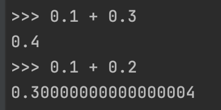
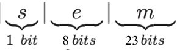
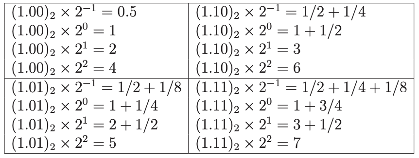

entiers relatifs et decimaux
Entiers relatifs
nombres signés
Les entiers signés sont positifs, negatifs ou nuls. Comme il n’est pas possible d’écrire, comme nous le faisons normalement, un nombre négatif avec un signe (-) devant, il va falloir utiliser une nouvelle convention.

Problèmes:
- 2 représentations pour le zero
- arithmetique plus difficile: on ne peut pas utiliser le même algorithme que pour l’addtion de 2 nombres positifs.
Représentation en complément à 2
C’est la représentation standard sur les ordinateurs pour exprimer les nombres entiers négatifs. Quand on parle de représentation signée ou d’entiers signés, ces derniers sont toujours exprimés à l’aide de la représentation en complément à 2.
Définition
Sur n bits, on exprime les nombres de l’intervalle $[–2^{(n-1)}; 2^{(n – 1)}– 1]$ selon les 2 règles suivantes:
- Un nombre positif est représenté de façon standard par son écriture binaire.
- un nombre négatif est représenté en ajoutant 1 à son complément à 1 (obtenu en inversant tous les bits) et en laissant tomber une éventuelle retenue finale.

Intérêt : on n’a plus à se préoccuper du signe des nombres avant d’effectuer l’opération.
Exemple:
Soit l’entier signé - 127 (1000 0001) que l’on additionne à 127 (0111 1111):

Représentation des nombres décimaux
nombres fractionnaires
Un nombre avec virgule, exprimé en base décimale peut être représenté comme une somme de puissances de 10:

écriture d'un nombre à virgule en base 10
- Les puissances de 10 positives pour la partie entière (à gauche de la virgule)
- les puissances de 10 negatives pour la partie après la virgule
En base 2, le nombre peut aussi s’écrire avec une virgule, et être lu comme une somme en puissance de 2:

écriture du même nombre en base 2
- Les puissances de 2 positives pour la partie entière (à gauche de la virgule)
- les puissances de 2 negatives pour la partie après la virgule
Pour représenter des nombres avec une partie fractionnaire, décomposer la partie fractionnaire en puissances inverses de 2:
| $2^{-1}$ | $2^{-2}$ | $2^{-3}$ | $2^{-4}$ | $2^{-5}$ | $2^{-6}$ | $2^{-7}$ | $2^{-8}$ |
|---|---|---|---|---|---|---|---|
| 1/2 | 1/4 | 1/8 | 1/16 | 1/32 | 1/64 | 1/128 | 1/256 |
| 0,5 | 0,25 | 0,125 | 0,0625 | 0,03125 | 0,015625 | 0,0078125 | 0,00390625 |
Lorsque l’on représente la partie décimale de 0.375, on a une valeur exacte que l’on peut coder sur 1 seul octet:

conversion binaire de la partie décimale .0375

conversion binaire de la partie décimale .1
Ce qui est très éloigné de la réalité…
Il existe une méthode systématique pour déterminer les bits de la partie fractionnaire. Voir le Bordas p18, §5.
codage en virgule fixe
Une première idée pourrait être d’utiliser 2 octets:
- 1 octet pour la partie entière. Si le nombre est signé, cela veut dire que le nombre est compris, pour sa partie entière entre -128 et 127.
- 1 octet pour la partie décimale. Cette partie est alors codée sur 256 valeurs, selon la méthode vue plus haut).
Il y a alors 2 problèmes avec cette représentation:
Problème 1: La partie fractionnaire va manquer de précision. Il n’y aura pas assez de chiffres significatifs lors de l’approximation. L’écart avec la valeur vraie du réel peut être trop important si on veut une précision raisonnable
Problème 2: Certains nombres ont une représentation avec un nombre fini de chiffres après la virgule dans la base 10, mais infinie dans la base 2. (voir la cas du 0.1 vu plus haut, qui est approximé à 0.09765625).
Ces approximations sont alors la source d’erreurs de calcul en python:

somme de 0.1 + 0.2 en python
codage en virgule flottante: norme IEE754
Principe
Pour un ordinateur, TOUT est discrêt: cela signifie que les nombres réels seront approchés par des nombres dits à virgule flottante.
Ces nombres avec une partie décimale sont représentés sur ordinateur selon la norme IEEE 754.
Ce codage revient à représenter le nombre sous la forme:
$$+/-1,M.2^E$$Cette forme rappelle ainsi l’écriture en notation scientifique.
M s’appelle la mantisse du nombre et E l’exposant. Comme la mantisse commence toujours par une partie entière égale à 1, on ne l’écrit pas et on n’exprime que la partie fractionnaire, M
Selon la précision, dite simple ou double, le nombre M est constitué de 23 bits ou bien de 55 bits.
| precision | bit de signe | E | M |
|---|---|---|---|
| simple | 1 | 8 | 23 |
| double | 1 | 8 | 55 |
Selon cette norme IEEE 754, en 32 bits (simple precision):
- Le premier bit est celui du signe
- les 8 bits suivants sont les bits de l’exposant E, exprimé en nombre relatif. Ce qui permet de coder l’exposant avec des valeurs comprises dans l’intervalle [-127; 128]
- les bits restants sont ceux de M

Cette méthode est-elle précise?
En raison du nombre limité de bits de la représentation, les calculs en virgule flottante ne peuvent pas atteindre une précision infinie.
Exemple: Soit la nombre 500 à coder en IEEE 754:
$$500=1,953125×2^8 =(1+2^{−1} +2^{−2} +2^{−3} +2^{−4} +2^{−6} )×2^8$$Cela donne alors notation binaire:
$$0~10000111~11110100000000000000000$$On a un bit de signe égal à 0, un exposant égal à 8 + 127 et les premiers bits de la pseudo-mantisse qui exprime 0,953125.
Pour représenter des constantes physiques:
- Vers l’infiniment grand, le nombre d’Avogadro vaut $6,0221.10^{23}$. Celui-ci, exprimé avec 5 chiffres significatifs, suffit à la plupart des calculs scientifiques.
- Vers l’infiniment petit, la masse du proton est $9,1094.10-{31}$. Avec 5 chiffres significatifs.
Avec la norme IEE754 sur 32 bits, les exposant de 2 varient de -127 à 128. Ce qui correspond à peu près à $\pm 10{38}$. Et le nombre de chiffres significatifs est sur 23 bits, ce qui signifie que la partie décimale est représentée avec 7 chiffres significatifs.
La multiplication et division par 2 d’un nombre binaire
La multiplication par 10 d’un nombre exprimé en base 10 va décaler la virgule vers la droite. Par exemple:
$$8,314 \times 10 = 83,14$$De la même manière, pour un nombre binaire:
- la multiplication par 2 décale sa virgule vers la droite
- la division par 2 décale sa virgule vers la gauche
Exemple avec la multiplication binaire: (nombres exprimés en binaire, sans faire référence à la norme IEE754)
$$1010.101 + 1010.101 = 10101.01$$Conclusion
Les règles de calcul en binaire seront les mêmes, que les nombres binaires soient des entiers naturels, relatifs, fractionnaires.
Un même mot-binaire peut représenter un entier naturel, relatif, fractionnaire. Il faut donc bien distinguer un nombre de sa représentation.
Exercices sur les nombres fractionnaires
Norme IEEE 754
Le nombre suivant est écrit dans la norme IEEE 754:
$0~10000111~11110100000000000000000$$
Repérer dans ce nombre:
- le bit de signe
- les bits correspondant à l’exposant
- les bits de la mantisse
Mantisse
Pour les questions suivantes, utiliser le tableau des puissances négatives de 2:
| $2^{-1}$ | $2^{-2}$ | $2^{-3}$ | $2^{-4}$ | $2^{-5}$ | $2^{-6}$ | $2^{-7}$ | $2^{-8}$ |
|---|---|---|---|---|---|---|---|
| 1/2 | 1/4 | 1/8 | 1/16 | 1/32 | 1/64 | 1/128 | 1/256 |
| 0,5 | 0,25 | 0,125 | 0,0625 | 0,03125 | 0,015625 | 0,0078125 | 0,00390625 |
question a: On donne la partie fractionnaire d’un nombre binaire (la mantisse):
$$1110~0000$$Donner la valeur correspondante en base décimale.
question b: La partie fractionnaire suivante (mantisse) est une approximation de 0,1:
$$0001~1001$$Vérifiez le par un calcul
question c: Une meilleure approximation de 0,1 est donnée par le nombre fractionnaire suivant (mantisse):
$$0001~1001~1001~1001~1001...$$Que constatez-vous?
question d: Lorsque l’on réalise l’addition binaire suivante, en python, on obtient un résultat approché et incorrect. Pourquoi?
Multiplication et division par 2
On utilise une représentation binaire avec une virgule flottante. A gauche de la virgule, le nombre binaire se lit d’une manière classique, comme pour les entiers naturels. A droite de la virgule, il s’agit de la partie fractionnaire en puissance négatives de 2.
question a: Quel est la valeur en base 10 de $0.1$(binaire). Calculer $0.1$(binaire) multiplié par 2.
question b: Quelle est la valeur binaire de $1101.1100$(binaire) divisé par 2?
Norme IEEE 754 à 5 bits
Pour l’exercice nous inventons une nouvelle norme: la IEEE 754 à 5 bits. Avec 5 bits, nous pouvons coder 25 nombres flottants. La precision est alors de 2 chiffres significatifs (taille en bits de la mantisse). Le format binaire est ainsi:
Voici la liste des 16 positifs :

$$+/-1,M.2^E$$Question: écrire les nombres binaires correspondants à ces 16 positifs.